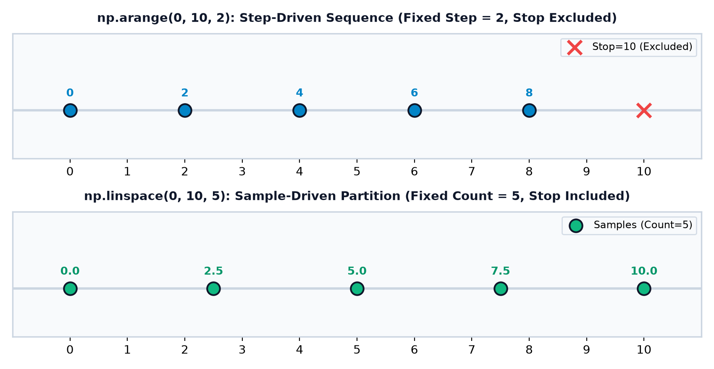
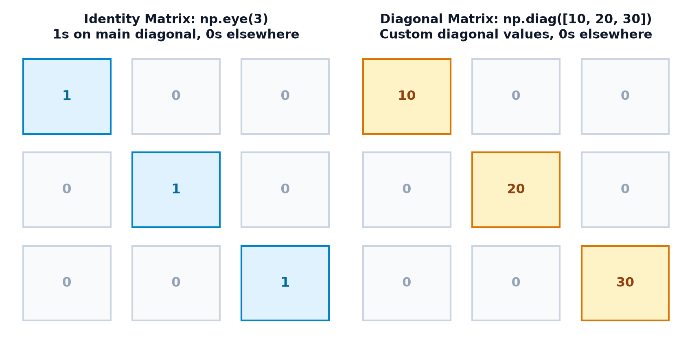
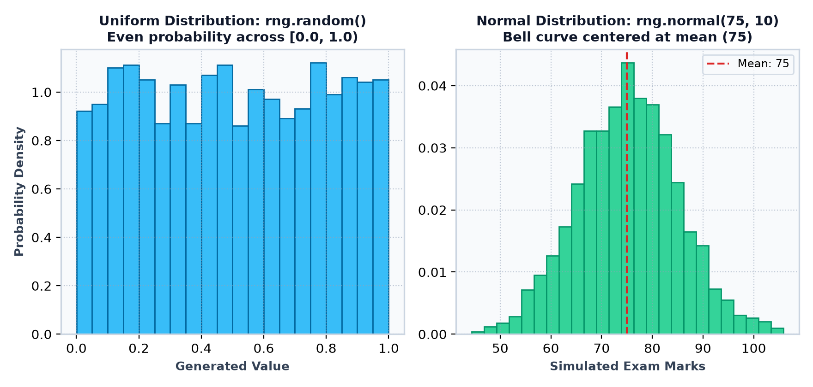
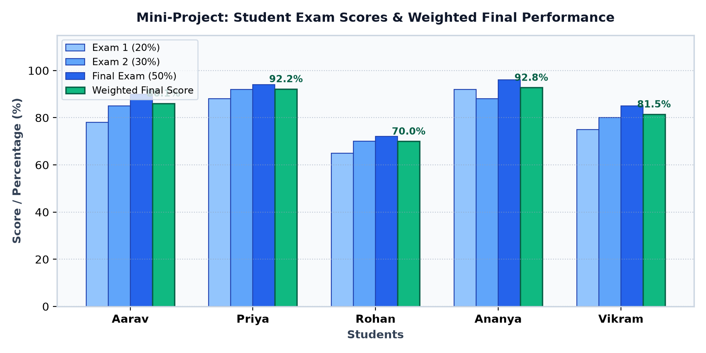

Topic 3 — Creating NumPy Arrays
Master every method for creating and initializing NumPy ndarray objects! Learn how to convert
existing Python lists and tuples, zero-fill scoreboards, initialize weights with ones, pre-allocate buffers with
np.empty(), generate sequences with arange, compute evenly spaced intervals with linspace,
construct identity and diagonal matrices, generate reproducible random distributions, and build a complete Classroom Exam Simulator.
Goals Learning Objectives
By the end of this lesson, you will be able to confidently explain and execute:
- Array Conversion: Transform standard Python lists and tuples into 1D and multidimensional
ndarrayobjects usingnp.array(). - Zero & One Initializers: Create pre-allocated arrays filled with zeros or ones using
np.zeros()andnp.ones(). - Uninitialized Buffers: Understand how
np.empty()works, its speed benefits, and why reading unwritten memory yields garbage values. - Step Sequences: Generate integer and floating-point ranges using
np.arange(start, stop, step)with exclusive stop behavior. - Evenly Spaced Partitions: Calculate exact sample intervals across continuous domains using
np.linspace(start, stop, num). - Matrix Structures: Construct identity matrices with
np.eye()and custom diagonal matrices withnp.diag(). - Reproducible Random Data: Generate deterministic pseudo-random integers and normal distributions using modern
np.random.default_rng(seed). - Dtype Control: Explicitly enforce numeric precision (such as
dtype=int32orfloat64) during array creation. - Multidimensional Shapes: Pass proper dimension tuples
(rows, cols)to initialize 2D and 3D data containers. - Decision Strategy: Select the optimal array creation function based on specific analytical and computational scenarios.
- Diagnostic Verification: Verify created arrays by inspecting their elements, shapes, sizes, and memory types.
01 Why Do We Need Different Ways to Create Arrays?
In real-world data science, numerical data arrives in vastly different contexts. Consider three everyday scenarios:
- A Classroom Teacher: Already possesses exam marks collected on paper:
[78, 85, 92, 67, 88]. They need to convert this existing list into an array for statistical analysis. - A Sports Official: Is preparing a scoreboard before a basketball tournament starts. No points have been scored yet, so they need a 4x4 grid pre-filled entirely with zeros.
- A Weather Analyst: Needs to simulate temperature curves at exactly 100 evenly spaced time points over 24 hours. They need a continuous numeric sequence.
Rather than forcing you to write slow Python loops to manually construct arrays, NumPy provides specialized, highly optimized C-level functions for every common data initialization pattern.
np.array()From lists/tuples
zeros() / ones()Buffers & masks
arange() / linspace()Stepped & partitioned
eye() / diag()Identity & diagonals
default_rng()Simulations & tests
import numpy as np
# Existing Python list from gradebook records
marks_list = [78, 85, 92, 67, 88]
# Convert to high-performance NumPy ndarray
marks_array = np.array(marks_list)
print("Marks array:", marks_array)
print("Type:", type(marks_array))Code Explanation: np.array() copies the numeric items from the standard Python list into a single, contiguous block of C-memory, immediately unlocking vector math operations.
import numpy as np
# Initialize attendance tracking for 5 students across Day 1 (all absent by default)
attendance = np.zeros(5, dtype=int)
print("Initial attendance:", attendance)02 Creating Arrays from Existing Data: np.array()
The most common entry point into NumPy is np.array(). It accepts any Python sequence—such as lists, tuples, or nested collections—and converts it into an ndarray.
import numpy as np
# 1. Array from a Python tuple
tuple_arr = np.array((10, 20, 30))
# 2. Array from a Python list
list_arr = np.array([40, 50, 60])
print("From tuple:", tuple_arr)
print("From list: ", list_arr)import numpy as np
# 2D nested list with specified float32 data type
matrix = np.array([
[1.5, 2.5],
[3.5, 4.5]
], dtype=np.float32)
print(matrix)
print("Shape:", matrix.shape)
print("Dtype:", matrix.dtype)Line-by-Line Breakdown: By setting dtype=np.float32, each decimal number consumes exactly 32 bits (4 bytes) rather than the default 64 bits (8 bytes), cutting memory footprint in half for large machine learning pipelines.
03 Initializing with Zeros and Ones
Frequently, you know the required dimensions of an array before knowing the actual numbers that will fill it. NumPy provides two workhorse functions for this purpose:
np.zeros(shape, dtype=float): Allocates an array filled entirely with0.np.ones(shape, dtype=float): Allocates an array filled entirely with1.
Important Note: The default dtype for both functions is float64. If you need integers, always specify dtype=int.
import numpy as np
# 3 teams across 4 tournament rounds
scoreboard = np.zeros((3, 4), dtype=int)
print(scoreboard)
print("Total elements:", scoreboard.size)import numpy as np
# Multiplicative weighting coefficients initialized to 1.0
weights = np.ones((2, 3), dtype=float)
print(weights)
print("Sum of weights:", np.sum(weights))04 What Is np.empty() and When Should You Use It?
Beginners often assume np.empty() creates an array containing nothing, or that it functions identically to np.zeros().
In reality, np.empty() allocates raw memory from your operating system without initializing the bytes!
import numpy as np
# Allocate a 5-element uninitialized buffer
buffer = np.empty(5)
# Immediately overwrite with computed values before reading
buffer[:] = [10.0, 20.0, 30.0, 40.0, 50.0]
print("Cleaned buffer:", buffer)When should you use np.empty()? Only when creating gigantic arrays (e.g., millions of elements) where you plan to overwrite every single element immediately in a subsequent loop or algorithm. Skipping the zero-fill step saves precious CPU clock cycles.
05 Generating Sequences with np.arange()
np.arange([start,] stop[, step, dtype=None]) is NumPy's vectorized counterpart to Python's built-in range().
It returns an array of values spaced by step.
import numpy as np
# Generate integers from 10 up to (excluding) 50, stepping by 10
decades = np.arange(10, 50, 10)
print("Decades sequence:", decades)import numpy as np
# Step by 0.2 from 0.0 up to (excluding) 1.0
fractions = np.arange(0.0, 1.0, 0.2)
print("Fractions:", fractions)np.arange() with fractional step sizes can occasionally produce unexpected array lengths. When you need a guaranteed number of decimal intervals, use np.linspace() instead!
06 Evenly Spaced Values with np.linspace()
np.linspace(start, stop, num=50, endpoint=True) generates num evenly spaced samples over a specified interval.
Unlike arange, you specify the exact count of points you want, and the stop value is included by default!
import numpy as np
# 5 exact points: 0, 25, 50, 75, 100
calibrations = np.linspace(0, 100, 5)
print("Calibrations:", calibrations)import numpy as np
# 11 sample timestamps across a 1-second physical simulation window
time_steps = np.linspace(0.0, 1.0, 11)
print("Time steps:", time_steps)
print("Count of steps:", len(time_steps))
07 Identity and Diagonal Matrices: np.eye() & np.diag()
In linear algebra and computer graphics, diagonal structures play a foundational role:
- Identity Matrix (
np.eye(N)): A square matrix with ones on the main diagonal and zeros elsewhere. It serves as the numerical "1" of matrix multiplication (A × I = A). - Diagonal Matrix (
np.diag(v)): Places the elements of vectorvalong the main diagonal with zeros in all non-diagonal cells.
import numpy as np
# 3x3 Identity matrix with integer ones
I_mat = np.eye(3, dtype=int)
print(I_mat)import numpy as np
# 1. Create a diagonal matrix with custom weights
diag_matrix = np.diag([10, 20, 30])
print("Diagonal matrix:\n", diag_matrix)
# 2. Dual use: extract the diagonal from an existing matrix!
extracted = np.diag(diag_matrix)
print("\nExtracted diagonal vector:", extracted)
08 Generating Reproducible Random Data
In modern NumPy, the recommended way to generate random numbers is via np.random.default_rng(seed).
Setting a fixed seed ensures that your code generates the exact same numbers every time it runs—essential for reproducible scientific research and unit testing!
import numpy as np
# Initialize reproducible random number generator
rng = np.random.default_rng(seed=42)
# Roll a standard 6-sided die 6 times (1 through 6 inclusive: pass high=7)
dice_rolls = rng.integers(1, 7, size=6)
print("Dice rolls:", dice_rolls)import numpy as np
rng = np.random.default_rng(seed=42)
# Bell-curve scores: mean=75, standard deviation=10, 5 students
sim_scores = rng.normal(loc=75, scale=10, size=5)
print("Simulated scores:", np.round(sim_scores, 1))
09 Choosing the Right Array Creation Method
Use this quick reference decision matrix to pick the right function for your task:
| Real-Life Requirement | Recommended Function | Syntax Example | Key Advantage |
|---|---|---|---|
| You have existing Python lists or tuples | np.array() |
np.array([1, 2, 3]) |
Direct data conversion into C-buffer |
| Initialize a scoreboard or accumulator | np.zeros() |
np.zeros((3, 3), dtype=int) |
Safe, clean start with zeroed bytes |
| Initialize weights or masks | np.ones() |
np.ones(5) |
Multiplication-ready neutral identity |
| Ultra-fast raw buffer for immediate overwrite | np.empty() |
np.empty(1000000) |
Fastest allocation (skips memory wipe) |
| Integers with a known fixed step size | np.arange() |
np.arange(0, 100, 5) |
Natural range step indexing |
| Exact point count over continuous domain | np.linspace() |
np.linspace(0, 1, 50) |
Guaranteed endpoint & stable step math |
| Linear algebra identity transformations | np.eye() |
np.eye(4) |
Ones on diagonal, zeros elsewhere |
| Simulations, game logic, or testing datasets | rng.integers() / rng.normal() |
rng.integers(1, 100, 10) |
Statistically sound, reproducible seeds |
10 Common Beginner Mistakes
Incorrect: Writing np.zeros(2, 3) to create a 2x3 matrix.
Error: TypeError: data type not understood (NumPy assumes the second argument 3 is the dtype!).
Correction: Always pass multidimensional shapes inside parentheses as a tuple: np.zeros((2, 3)).
Incorrect: Writing np.arange(1, 5) expecting 5 to be present in the output.
Explanation: arange(1, 5) yields [1, 2, 3, 4]. In contrast, linspace(1, 5, 5) includes 5: [1., 2., 3., 4., 5.].
Incorrect: Calling arr = np.empty(5) and performing calculations immediately.
Explanation: np.empty() contains uninitialized RAM garbage numbers. Always write before reading!
Incorrect: Using small float steps like np.arange(0, 0.3, 0.1) and expecting exactly 3 items.
Explanation: Binary rounding can cause arange to unpredictably include or exclude the endpoint. Use np.linspace() instead.
Incorrect: Expecting np.zeros(3) to be [0, 0, 0].
Explanation: Default dtype is float64: [0., 0., 0.]. To get integers, explicitly pass dtype=int.
Incorrect: Calling rng = np.random.default_rng() without a seed during testing.
Correction: Always pass a deterministic integer seed (e.g., default_rng(seed=42)) so your tests produce predictable results.
Incorrect: Thinking np.eye(3) fills a 3x3 matrix with ones.
Correction: np.eye(3) creates an identity matrix with ones only on the main diagonal. For all ones, use np.ones((3, 3)).
Incorrect: Writing np.array(1, 2, 3).
Correction: Arguments must be enclosed inside brackets as a sequence: np.array([1, 2, 3]).
Incorrect: np.array([[1, 2], [3]]) (rows have unequal lengths).
Result: ValueError: setting an array element with a sequence.
Correction: All rows in a matrix must contain the exact same column count.
Incorrect: Extracting a diagonal vector with d = np.diag(matrix), changing d[0] = 99, and expecting the original matrix to update.
Correction: Extracting with np.diag() returns a copy. If you need to mutate the diagonal in-place, use np.fill_diagonal(matrix, val).
11 Interactive Learning Workshops
🧪 Workshop 1: Array Creation Method Lab Interactive
Select an array creation function below to observe its live generated shape, data type, and array structure:
⏱️ Workshop 2: arange vs. linspace Parameter Explorer Sequence Lab
Compare how step-driven sequences (arange) differ from sample-driven intervals (linspace):
12 Practical Mini-Project — Classroom Exam Simulator & Grade Initializer
Let's put everything we have learned into action! In this real-world project, an educator is setting up a complete computational grading system for 5 students across 3 major examinations: Exam 1 (20%), Exam 2 (30%), and the Final Comprehensive Exam (50%).
| Student Name | Exam 1 (Weight: 20%) | Exam 2 (Weight: 30%) | Final Exam (Weight: 50%) |
|---|---|---|---|
| Aarav | 78 | 85 | 90 |
| Priya | 88 | 92 | 94 |
| Rohan | 65 | 70 | 72 |
| Ananya | 92 | 88 | 96 |
| Vikram | 75 | 80 | 85 |
Algorithm Steps
- Initialize an empty attendance tracking matrix with
np.zeros((5, 5), dtype=int)for 5 students across 5 days. - Set up the baseline exam score matrix for the 5 students across 3 exams.
- Create a continuous performance evaluation scale from 0% to 100% using
np.linspace(). - Define the exam weighting coefficients vector:
weights = np.array([0.20, 0.30, 0.50]). - Compute the weighted final score for each student using matrix multiplication:
exam_scores @ weights. - Identify the student who achieved the highest overall weighted grade in the cohort.
import numpy as np
students = ["Aarav", "Priya", "Rohan", "Ananya", "Vikram"]
# 1. Initialize attendance grid (5 students x 5 days) using np.zeros
attendance_grid = np.zeros((5, 5), dtype=int)
# 2. 2D Exam Score Matrix: 5 students x 3 exams
exam_scores = np.array([
[78, 85, 90], # Aarav
[88, 92, 94], # Priya
[65, 70, 72], # Rohan
[92, 88, 96], # Ananya
[75, 80, 85] # Vikram
])
# 3. Exam Weights: 20% Exam 1, 30% Exam 2, 50% Final
weights = np.array([0.20, 0.30, 0.50])
# 4. Matrix Multiplication for Weighted Final Scores
weighted_scores = exam_scores @ weights
print("=== CLASSROOM EVALUATION REPORT ===")
for i in range(len(students)):
print(f"{students[i]}: Final Weighted Score = {weighted_scores[i]:.1f}%")
# 5. Cohort Metrics
top_idx = np.argmax(weighted_scores)
print(f"\nTop Performer: {students[top_idx]} ({weighted_scores[top_idx]:.1f}%)")
print(f"Cohort Class Average: {np.mean(weighted_scores):.1f}%")Project Visualization

- Diagonal Weighting Matrix: Re-implement the weighting calculation using a full diagonal matrix:
W = np.diag([0.2, 0.3, 0.5]). - Random Simulation: Use
rng.integers(60, 100, size=(10, 3))to generate scores for a full class of 10 students. - Attendance Tracker: Mark students randomly present (1) or absent (0) using
rng.choice([0, 1], size=(5, 5), p=[0.1, 0.9]).
13 Practice, Revision & Knowledge Challenges
Part A: 8 Output Prediction Questions
Q1: What will np.arange(2, 10, 2) generate?
import numpy as np
print(np.arange(2, 10, 2))Answer: [2 4 6 8]
Explanation: Starts at 2, steps by 2, stops before 10 (10 is excluded).
Q2: What is the length of np.linspace(0, 1, 5)?
import numpy as np
print(len(np.linspace(0, 1, 5)))Answer: 5
Explanation: linspace creates exactly num points: [0. 0.25 0.5 0.75 1. ].
Q3: What does np.eye(2, dtype=int) produce?
Answer:
[[1 0]
[0 1]]Explanation: A 2x2 identity matrix with ones on the main diagonal.
Q4: What will np.diag([4, 7]) produce?
Answer:
[[4 0]
[0 7]]Explanation: Creates a 2x2 matrix with 4 and 7 on the diagonal.
Q5: What is the default dtype of np.zeros(5)?
Answer: float64
Explanation: NumPy initializers default to 64-bit floating point decimals.
Q6: What will rng.integers(1, 5) return for maximum possible value?
Answer: 4
Explanation: integers(low, high) excludes the high value.
Q7: What does np.ones((2, 2)).size return?
Answer: 4
Explanation: Total element count is 2 * 2 = 4.
Q8: What does np.linspace(0, 10, 5, endpoint=False) return?
Answer: [0. 2. 4. 6. 8.]
Explanation: When endpoint=False, the stop value (10) is omitted.
Part B: 6 Short Coding Exercises
Exercise 1: Create a 5x5 Matrix of Fives
Task: Use np.ones() and scalar multiplication to create a 5x5 matrix filled with integer 5s.
import numpy as np
fives = np.ones((5, 5), dtype=int) * 5
print(fives)Exercise 2: Century Countdown Sequence
Task: Use np.arange() with a negative step to generate a countdown: [100, 90, 80, 70, 60].
import numpy as np
countdown = np.arange(100, 50, -10)
print(countdown) # [100 90 80 70 60]Exercise 3: Centimeter to Meter Grid Intervals
Task: Generate 21 evenly spaced measurement points between 0.0m and 2.0m.
import numpy as np
meter_grid = np.linspace(0.0, 2.0, 21)
print(meter_grid)Exercise 4: Diagonal Transformation Matrix
Task: Construct a 4x4 matrix with scale factors [2, 4, 6, 8] along the diagonal.
import numpy as np
scale_mat = np.diag([2, 4, 6, 8])
print(scale_mat)Exercise 5: Reproducible Coin Toss Simulator
Task: Use default_rng(seed=10) to simulate 10 coin flips (0 for Heads, 1 for Tails).
import numpy as np
rng = np.random.default_rng(seed=10)
flips = rng.integers(0, 2, size=10)
print("Coin flips:", flips)Exercise 6: Pre-allocate Large Buffer Safely
Task: Allocate an uninitialized buffer of 10 elements with np.empty() and initialize all values to -1.
import numpy as np
buf = np.empty(10, dtype=int)
buf.fill(-1)
print(buf) # [-1 -1 -1 -1 -1 -1 -1 -1 -1 -1]Part C: 5 Debugging Questions
Debug 1: Passing Multiple Arguments to np.zeros
Broken Code: np.zeros(3, 3)
Error: TypeError: data type not understood
Fix: Wrap shape in a tuple: np.zeros((3, 3)).
Debug 2: Linspace Step Confusion
Broken Code: np.linspace(0, 10, 2) (expecting step of 2)
Fix: Third argument of linspace is count of points, not step! To step by 2, use np.arange(0, 12, 2) or np.linspace(0, 10, 6).
Debug 3: Forgetting Seed for Reproducibility
Broken Code: np.random.default_rng().integers(1, 10, 5)
Fix: Pass a fixed seed for reproducible results: np.random.default_rng(seed=42).integers(1, 10, 5).
Debug 4: Inconsistent Nested Row Lengths
Broken Code: np.array([[10, 20], [30]])
Fix: All matrix rows must share equal column counts: np.array([[10, 20], [30, 40]]).
Debug 5: Passing Float Bounds to rng.integers
Broken Code: rng.integers(1.0, 6.0, 5)
Fix: rng.integers requires integer bounds: rng.integers(1, 7, 5).
Part D: 6 Conceptual MCQs
1. Which function creates an array with uninitialized memory?
A) np.zeros() | B) np.ones() | C) np.empty() | D) np.void()
Answer: C
2. How does np.linspace() handle the stop value by default?
A) Excludes it | B) Includes it | C) Rounds it | D) Squares it
Answer: B
3. What does np.eye(4) construct?
A) 4x4 matrix of all ones | B) 4x4 matrix of random numbers | C) 4x4 identity matrix | D) 4-element 1D vector
Answer: C
4. What is the recommended modern random number generator in NumPy?
A) np.random.rand() | B) np.random.default_rng() | C) random.random() | D) np.random.seed()
Answer: B
5. What is the default data type of np.zeros((3, 3))?
A) int32 | B) int64 | C) float64 | D) bool
Answer: C
6. What will np.arange(10, 20, 5) produce?
A) [10 15 20] | B) [10 15] | C) [15 20] | D) [10 20]
Answer: B
Part E: 2 Real-Life Mini-Challenges
Mini-Challenge 1: Sensor Telemetry Buffer Allocation
Scenario: An IoT temperature station records 6 readings per hour over a 24-hour cycle (144 total readings). Pre-allocate the buffer with zeros and populate the first 6 readings.
import numpy as np
# 24 hours x 6 readings per hour
telemetry_buffer = np.zeros((24, 6), dtype=float)
# First hour sensor burst
telemetry_buffer[0] = [24.1, 24.3, 24.2, 24.5, 24.4, 24.6]
print("First hour mean:", np.mean(telemetry_buffer[0]))
print("Buffer shape:", telemetry_buffer.shape)Mini-Challenge 2: Audio Tone Sine Wave Generator
Scenario: Generate 100 time points from 0 to 2π using np.linspace() and compute the sine wave amplitude using NumPy's vectorized np.sin() function.
import numpy as np
# 100 sample intervals across one complete wave cycle (2 * pi)
t = np.linspace(0, 2 * np.pi, 100)
wave = np.sin(t)
print("Peak amplitude:", np.max(wave))
print("Trough amplitude:", np.min(wave))
print("Sample count:", len(wave))NumPy Topic 3 Quick Reference Cheat Sheet
| Creation Function | Syntax Example | What It Generates |
|---|---|---|
np.array() |
np.array([1, 2, 3]) |
Converts list/tuple sequence to ndarray |
np.zeros() |
np.zeros((2, 3), dtype=int) |
Pre-allocates matrix filled with zeros |
np.ones() |
np.ones(4) |
Pre-allocates array filled with 1.0 |
np.empty() |
np.empty(10) |
Fast raw memory allocation (uninitialized) |
np.arange() |
np.arange(0, 10, 2) |
Step sequence up to (excluding) stop value |
np.linspace() |
np.linspace(0, 1, 5) |
Evenly spaced point count (includes stop) |
np.eye() |
np.eye(3) |
Identity matrix (1s on diagonal, 0s elsewhere) |
np.diag() |
np.diag([10, 20]) |
Constructs or extracts diagonal array |
default_rng() |
np.random.default_rng(42) |
Initializes reproducible random generator |
rng.integers() |
rng.integers(1, 7, size=6) |
Generates random integers in range [low, high) |
rng.normal() |
rng.normal(loc=75, scale=10, size=5) |
Generates Gaussian bell-curve samples |
Self-Paced Mastery Checklist
- ✅ I can convert Python lists and tuples into NumPy arrays using
np.array(). - ✅ I know how to initialize arrays with
np.zeros()andnp.ones()using shape tuples. - ✅ I understand why
np.empty()is faster and why reading it before writing is dangerous. - ✅ I can generate stepped integer sequences with
np.arange(start, stop, step). - ✅ I know when to use
np.linspace()for guaranteed sample point counts. - ✅ I can construct an identity matrix using
np.eye()and a diagonal matrix usingnp.diag(). - ✅ I know how to use
np.random.default_rng(seed)for reproducible random numbers. - ✅ I can generate random integers and normal distributions.
- ✅ I can specify custom dtypes like
int32andfloat32during creation. - ✅ I have completed and verified the Classroom Exam Simulator mini-project!